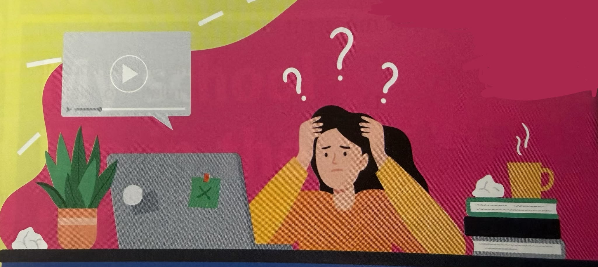

online
learning
1 Online learning isn't always easy. There are some challenges you may face. Don't panic ... we're here to help!
2 Preparing for your online class
Try to sign in early for your class. Spend some time trying out the different functions of the software you are using. Then, you can make sure the video and sound work properly.
3 Staying focused
Having a quiet place to work is important. Keep a notebook nearby for taking notes. Put away your phone to help you stay focused.
4 Taking breaks
Staring at a screen can be exhausting. Take breaks when you can. A break of five to ten minutes can help you relax and clear your mind. It's also a good idea to have some snacks.
5 Staying connected
It's easy to feel isolated in online classes. Try to reach out to teachers or join virtual study groups to connect with your classmates.